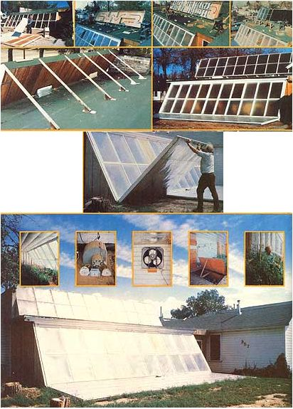

TOP ROW: Joseph Orr?happy cuss that he is?even had fun building the let-down insulating doors/solar reflectors for his greenhouse . . . the next three photos show steps taken during construction of roof-mounted 6' X 30' supplemental solar collector. SECOND ROW: Back side of completed rooftop solar collector . . . and the finished greenhouse from the front with. its reflector doors down. RIGHT: Mr. Orr uses the ""armstrong"" method of raising and lowering the insulating reflectors. BELOW: Another view of the greenhouse in action, soaking up the sun. INSET, LEFT TO RIGHT: Interior of the working greenhouse . . . two shots of some of the simple timers and fans that control various modes of the Orr system . . . although it does not have to be raised during any mode of the greenhouse's operation, this plywood door can be lifted for easy access to the heat exchanger pipes built into the floor of the building . . . and a laughing Joseph Orr explains the efficiency of his ""better than 100% solar-heated""conservatory.